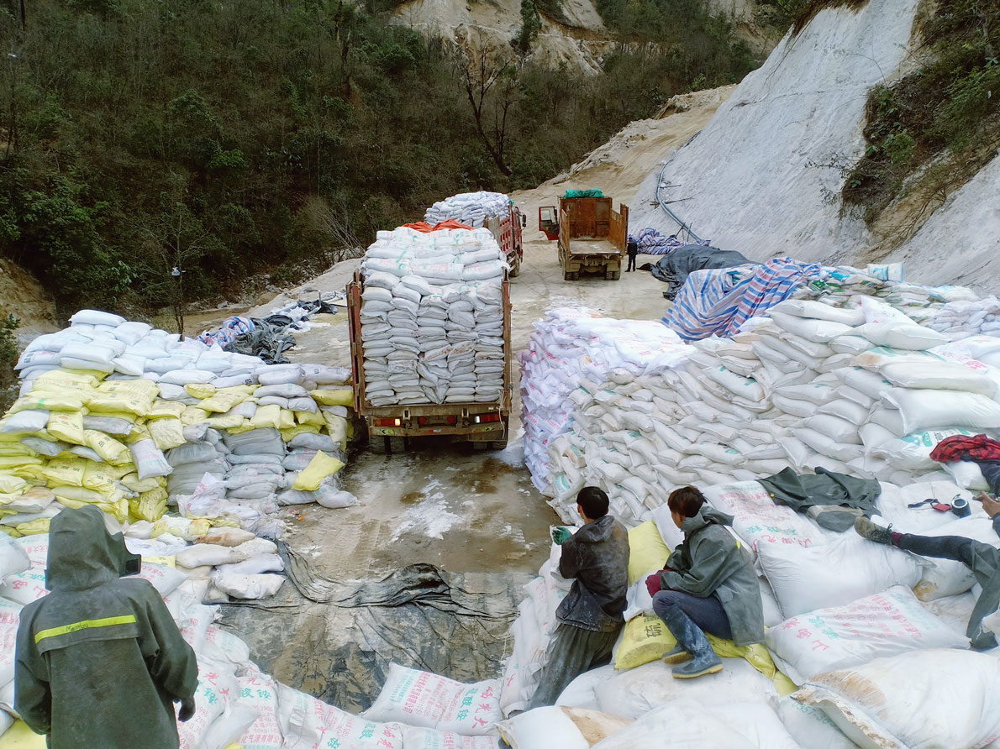
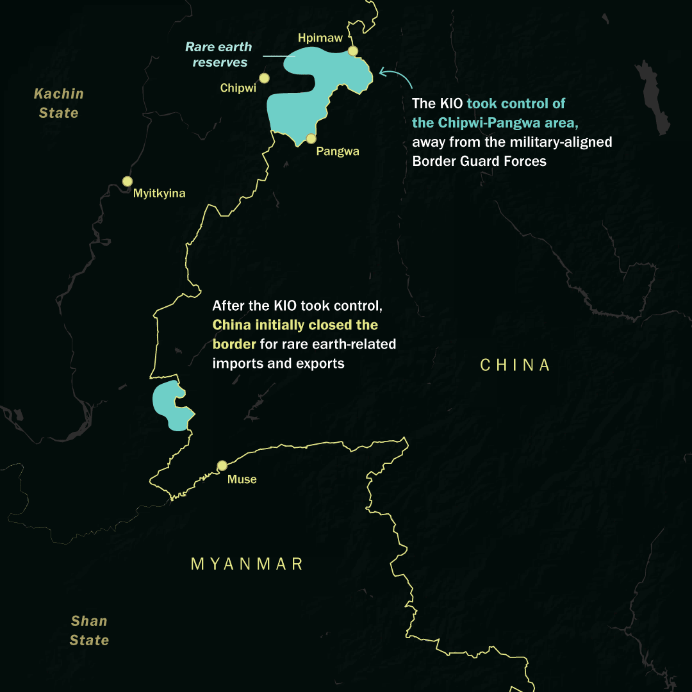
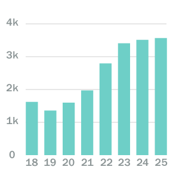
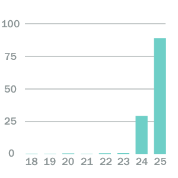

Rare earth mining in Myanmar is concentrated in two distinct zones, both heavily affected by conflict.
Outsourcing the Green Transition and Rearmament Imperative
The magnets inside electric vehicles, wind turbines and advanced weapons – including munitions and missile defence systems used in the 2026 U.S.-Israeli war with Iran – increasingly depend on rare earths extracted using toxic chemicals injected into hillsides in a Myanmar conflict zone.
Myanmar has become one of the world’s most important sources of heavy rare earth elements (HREEs), particularly dysprosium and terbium. These are essential for high-performance magnets used in electric vehicle motors, wind turbines and smart weapon guidance and control systems. The U.S.-Israeli attack on Iran transformed what is often regarded as a concern for the green transition supply chain – given their importance for renewable energy technologies – into one for the defence industry. Replenishing the advanced munitions and missile defence interceptors consumed during the conflict will take years and depend on access to HREE supply chains that are both limited in capacity and vulnerable to geopolitical disruption.

While China dominates the market, its own HREE extraction has been curtailed by tightened environmental regulation since the early 2010s. In 2016, Jiangxi province shut down much of its heavy rare earth mining, the core of China’s production, along with smaller deposits extending into southern provinces including Yunnan. Extraction then shifted across the border into Myanmar, where the armed group in control of the area imposed few if any environmental safeguards.
By 2021, Myanmar had become the single largest source of heavy rare earth feedstock for China, with exports growing dramatically from roughly $1.5 million in 2014 to around $780 million in 2021.
This mountainous region bordering China hosts the most commercially important deposits. Mining is conducted through in situ leaching, an environmentally destructive method whereby chemicals are injected into clay-rich slopes.
The mineral-bearing solution drains into collection ponds, and rare earth compounds are precipitated and concentrated before the mixture is trucked across the border to China for processing.
Satellite analysis in 2022 documented more than 2,700 leaching pools across nearly 300 separate sites in the Chipwi/Pangwa Belt area, often referred to as Kachin Special Region 1.
Crisis Group remote sensing analysis shows a stark increase in mining area from 1,622 hectares in 2018 to 3,565 hectares in 2025, with most sites concentrated in the Pangwa area and some of the others scattered across the rest of Chipwi township.
Control of these deposits has shifted with the expansion of Myanmar’s civil war after the 2021 coup. Previously, the area was under the sway of Border Guard Forces aligned with the Myanmar military. But the coup and the upsurge in conflict that followed upended the balance of power. In late 2024, the Kachin Independence Organisation (KIO), one of the country’s oldest and strongest ethnic armed groups, overran the area and assumed de facto control of the main mining belt. The revenue now flows to this group rather than Naypyitaw and its proxies.

For a time after the KIO took control, China closed the border for rare earth imports, as well as for exports of materials needed for mining. The importance of these rare earth supplies to Beijing meant that it soon relented, however, allowing a reduced flow of the minerals over much of 2025 and full reopening of the trade by late October. China has also applied much less pressure on the KIO to stop fighting the Myanmar military, compared with other armed groups along the border, such as the Myanmar National Democratic Alliance Army and the Ta’ang National Liberation Army, both of which were forced into ceasefires with Naypyitaw. The differential treatment is at least in part due to the leverage the KIO has as a supplier of a strategic resource.
But rare earth deposits are a double-edged sword for the armed outfit. Beijing remains highly sensitive to disruptions in rare earth supply, and it is unlikely to tolerate prolonged interruptions or behaviour it views as threatening the reliability of exports. The same deposits that provide the KIO with revenue and leverage therefore also constitute a geopolitical vulnerability for the group.
More recently, smaller-scale mines have appeared further south in Shan State, in territories controlled by the United Wa State Army, one of the country’s largest ethnic armed groups, and its ally, the National Democratic Alliance Army (Mongla group).
While reportedly lower-grade than the Kachin deposits, these sites are expanding rapidly – with the area affected by mining tripling from 2024 to 2025, according to Crisis Group analysis of high-resolution imagery.
The Rapid Expansion of Rare Earth Mining
Mining area by year (in hectares), in different scales
Kachin State

Shan State

The Shan sites are also responsible for environmental harm. Pollution from leaching operations has affected tributaries feeding into the Mekong River system, raising concerns in downstream countries, particularly Thailand.
The environmental impact is visible from space. Satellite imagery shows rapid vegetation clearance on steep hillsides, expansion of leaching ponds and waste areas, and a growing concentration of mining activity near waterways. But the consequences extend far beyond the mine sites themselves. Thai authorities have recorded persistent arsenic contamination in rivers flowing from Myanmar, while regional monitoring has detected pollutants crossing into both Thailand and Laos. Researchers have linked much of the recent contamination to the dramatic expansion of mining in eastern Shan State, which also includes gold mining.
The outsourcing of mining to Myanmar means that environmental damage occurs outside China’s borders while preserving Beijing’s control of processing, refining and manufacturing.
Decarbonising energy systems is vital to addressing global warming, but it has created externalities of its own. The supply of critical inputs for clean energy now depends on territories governed by armed groups in Myanmar’s borderlands, and their extraction is causing major environmental harm, with cross-border repercussions.
Supply of critical inputs for clean energy now depends on territories governed by armed actors in Myanmar’s borderlands and causes great environmental harm.
With no good alternatives, the green energy sector and government regulators have tended to close their eyes. Now the push for rearmament is increasingly entangled with the same supply chains. As Western governments seek to bolster their defence capabilities and rebuild stocks of advanced missiles, interceptors and other weapons systems expended in recent conflicts, demand for heavy rare earths will grow. A strategic material sourced from Myanmar’s conflict zones now sits at the intersection of two defining global priorities: clean energy and rebuilding military stockpiles.